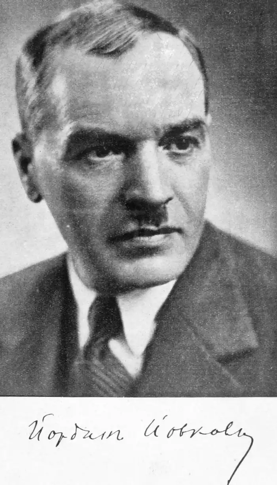
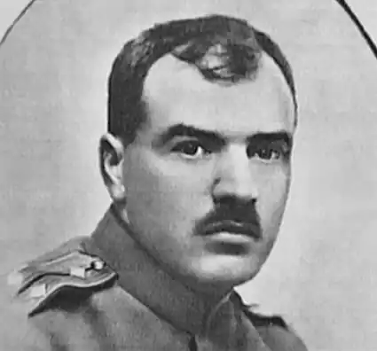

Йордан Стефанов Йовков (9 листопада 1880 р — 15 жовтень 1937 г.) був видатним болгарським письменником міжвоєнного періоду.
Йовков народився в селі Жеравна, навчався в Першій Софійській чоловічої середньої школи, яку закінчив в 1900 році з відзнакою і став учителем. Після навчання протягом одного року в селі в центральній Болгарії він поступив в Школу офіцерів запасу в Княжево як курсанта, а потім переїхав в Софійський університет для вивчення права в 1904 році.
Коли Перша Балканська війна почалася в 1912 році, він отримав, був зарахований і разом зі своїм братом Костою вступив в 41-ю дивізію (ймовірно, 41-й полк) в Бургасі. Він був поранений кулею в ногу під час Другої Балканської війни в 1913 році під час битви під Дойраном. Після цього він оселився в Софії і став редактором журналу "Народна армія", а потім бібліотекарем міністра внутрішніх справ і редактором державного видання. Під час світової війни його відправили працювати прикордонником на грецький кордон біля річки Місця. Там він отримав повістку на роботу в якості кореспондента газети "Військові новини". Він пробував роки викладання в Варні до осені 1920 року, після чого займав посаду прес-секретаря по болгарському законодавству в Бухаресті. Він був знижений на посаді в 1927 році з невстановлених причин, що змусило його піти у відставку і повернутися в Софію. Військовий досвід Йовкова сильно вплинув на його менталітет і стиль письма. У той час як його перший літературний твір було коротким розповіддю про сільське життя і патріархальних звичаї, опублікованими в 1910 році, його повоєнні твори були більш різкими і мілітаристським. Врешті-решт він відійшов від меланхолійних, депресивних тим до справжнім описами сільських жителів і сільського життя. У своєму короткому оповіданні "Шібіль" він використовував тюркізми, щоб надати роботі відчуття реалістичності. Його роботи "Легенди Старої Планіни" (1927, "Старопланінскіе легенди", також відомі як "Балканські легенди") і "Інн в Антимово". (1927) затвердив його в якості основного письменника. У 1929 році він отримав премію імені Кирила і Мефодія за літературу від Болгарської академії наук. Його інші роботи включають драми Албена (1930) і Боряна (1932); комедія "Мільйонер" (1930, Milionerut); і книга "Сім'я біля кордону" (1934, Чіфлікутскій край граніцата). "Албена" (1962) — лібрето Петра Фільчева (за драмою Йордана Йовкова) і "Мільйонер" (1965) були перетворені в опери Парашкевов Хаджіева. Ряд його історій був перетворений в фільми, в тому числі "Най-вярната варта" ( "Сама вірна гвардія", фільм 1929 року); Шібіль (1968); Нона (1973, з роману Чіфлікутскій край граніцата); і 24 години дня (1982, за мотивами роману "Частінять учитель"). Рідний дім Йовкова в Жеравни був перетворений в музей в 1957 році. У 1985 році в його честь була названа гребля в північно-східній Болгарії. Гребля Йовковці, розташована в 5 км від міста Олена, постачає водою Велико Тирново і прилеглі райони. Він становить 223 000 Декар і є гігієнічної зоною, що охороняється.